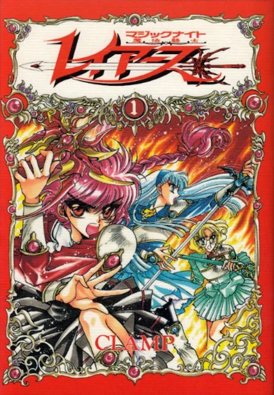

Animeter
 Anime
Anime
Manga1994 · Action, Adventure, Comedy
Magic Knight Rayearth
魔法騎士（マジックナイト）レイアース
AniList7.2
Animeter—
2 seasons49 ep
MangaUnclear
2 seasons, 49 episodes
In airing order. Episode numbers on this site count straight through every season, so season 2 starts at episode 21.
1
1994 · TV
Magic Knight Rayearth
Episodes1–2020 ep
2
1995 · TV
Magic Knight Rayearth II
Episodes21–4929 ep
Sources: AniList